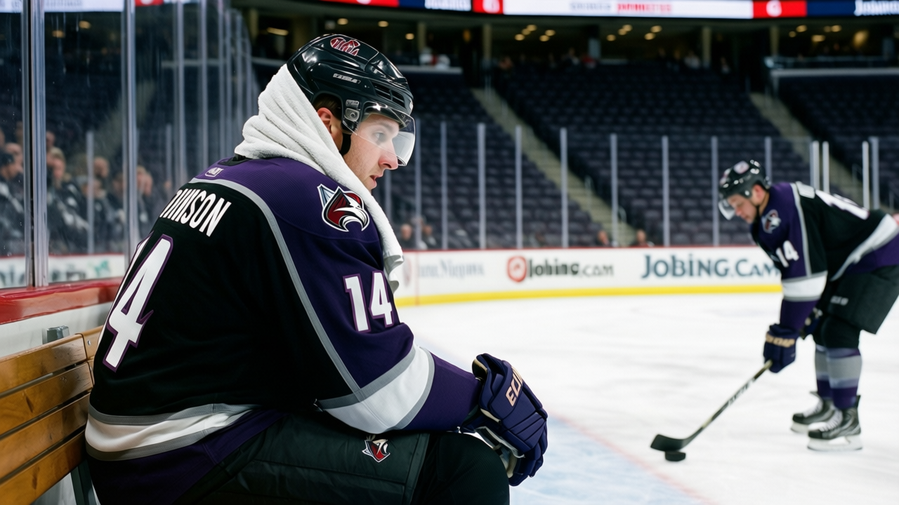

THE COACH SAT WHOM: Five benches, five better men, zero excuses
The grading says who's better. The lineup card says the coach doesn't care. Here are five clubs paying for it.


 Mickey "The Mick" Donnelly·2 min read
Mickey "The Mick" Donnelly·2 min read
The grading says who's better. The lineup card says the coach doesn't care. Here are five clubs paying for it.
Mickey "The Mick" Donnelly·2 min read$69.07 million buys $2.76 million per point, four straight losses, and two men collecting $2.77M and $2.10M for under 10 minutes a night.


 Mickey "The Mick" Donnelly·3 min read
Mickey "The Mick" Donnelly·3 min readLast week I told you Detroit was the most overpaid team in hockey. Here's the autopsy. The roster isn't just expensive. It's badly built, and the coach is holding the chisel.

 Mickey "The Mick" Donnelly·3 min read
Mickey "The Mick" Donnelly·3 min readDetroit spends $80.89 million to buy 26 points and a five-game skid. Vancouver spends half that and has more wins than Detroit has losses.
 Mickey "The Mick" Donnelly·2 min read
Mickey "The Mick" Donnelly·2 min readLosing streaks, buried paychecks, and goalies who can't look at you. The blame sheet says these 5 benches are about to get uncomfortable.
 Mickey "The Mick" Donnelly·2 min read
Mickey "The Mick" Donnelly·2 min read